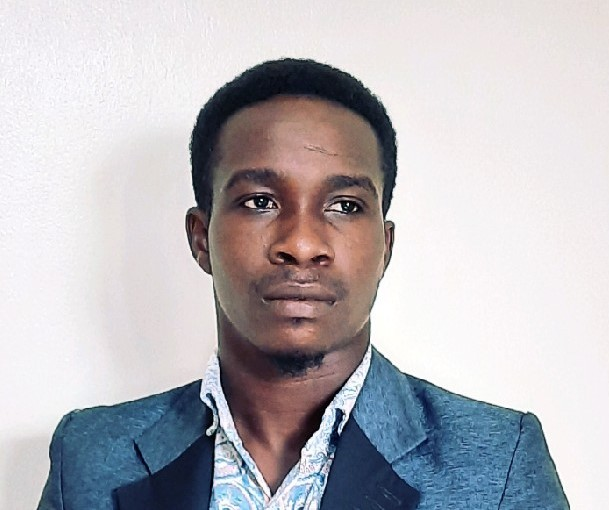

Emmanuel Nsehe Isaac

Summary
I am an experienced Technical Support Specialist, skilled in hardware and
software installation, troubleshooting and repairs. I learn fast and can
pick up new and required technology support skills in line with
organisation's demands.
Education
Bachelor of Sciecne, Building Techonology - Covenant University (2012-2017)
Work Experience
System Support Engineer - Fidelity Bank PLC.
Jan. 2023
- Provide first level of support to over 200 users across 10 locations.
- Install and perform repairs to hardware, software, and peripheral equipment, following design
and installation specifications.
- Support the branches in Core Banking software, MS Exchange e-mail or intranet system, ATMs,
Clean power provision - Inverters, Surge and Lightening protection.
- Document all incident request from users including communication and resolution.
- Work with other technical engineers to resolve and escalate more complex issues to the appropriate team.
- Ensure software patches and applications are upgraded and up to date.
- Refer major hardware or software problems or defective products to vendors and technicians
for service
Regional Information Technology Support - Union Bank of Nigeria.
Feb. 2022 - Nov. 2022
- Provide first level of support to over 50 users across 5 locations.
- Troubleshoot hardware and softwares with a resolution rate of 95% without escalation.
- Document all incident request from users including communication and resolution.
- Work with other technical engineers to resolve and escalate more complex issues to the appropriate team.
- Manage assets catalogue and ensure compliance with licensing and company's regulation.
Skills
- Application Support.
- Hardware/Software installation, configuration and support.
- Remote user support(Tools:Dameware, Microsoft teams and Beyond Trusr).
- End user workstation support(Desktop and Laptop).
- Network switch installation, configuration and troubleshooting.
- Manage Engine ticketing system
Certifications and Trainings
- Introduction to Cyber Security - CISCO
- Fortinet Network Security Associate 1 - NSE1
- Fortinet Network Security Associate 2 - NSE2
Others